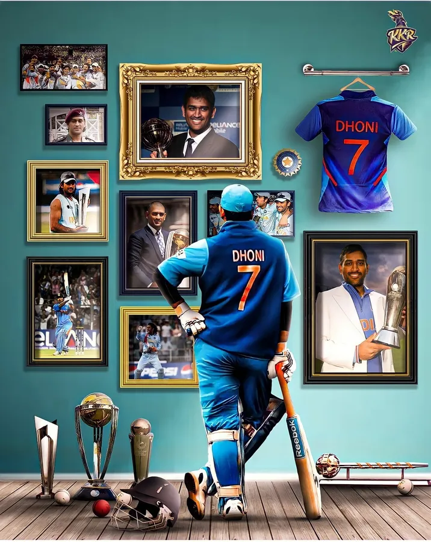
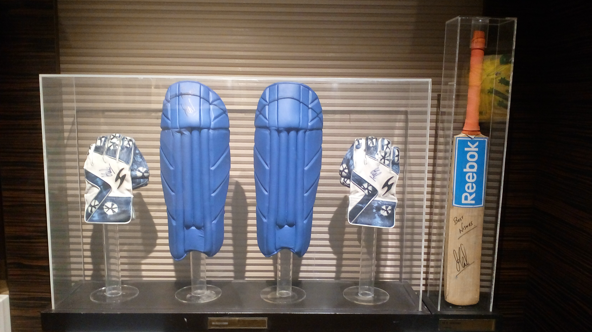

BIOGRAPHY
Mahendra Singh Dhoni; born 7 July 1981) is an Indian professional cricketer who plays as a right handed batter and a wicket-keeper. Widely regarded as
one of the most prolific wicket-keeper-batsmen and captains, he
represented the Indian cricket team and was the captain of the side in limited-overs formats from 2007 to 2017 and in test cricket
from 2008 to 2014. Dhoni has captained the most international matches and is the most successful Indian captain. He has led India to victory in the 2011 Cricket World Cup, the 2007 ICC World Twenty20 and the 2013 ICC Champions Trophy, the only captain to win three different limited overs tournaments. He also led the teams that won the Asia Cup in 2010, 2016 and was a member of the title winning squad in 2018.
Born in Ranchi, Dhoni made his first class debut for Bihar in 1999. He made his debut for the Indian cricket team on 23 December 2004 in an ODI against
Bangladesh and played his first test a year later against Sri Lanka. In 2007, he became the captain
of the ODI side before taking over in all formats by 2008. Dhoni retired from test cricket in 2014, but continued playing in
limited overs cricket till 2019. He has scored 17,266 runs in international cricket including 10,000 plus runs at an average of more than 50 in ODIs.
2007 World T20 and captaincy
India recorded identical 3-1 victories over West Indies and Sri Lanka in early 2007 with Dhoni averaging in excess of 100 in both the seriesSubsequently, Dhoni was part of the squad for 2007 Cricket World Cup in which India unexpectedly crashed out in the group stage after losses to Bangladesh and Sri Lanka with Dhoni
scoring ducks in both these matches and just 29 runs in the tournament. As a result, Dhoni's house in Ranchi was vandalized and damaged by activists of JMM and security was tightened for his family.Dhoni scored 91* against Bangladesh in the first match of the ODI series in May 2007 which fetched the Man of the Match award while also later winning the Man of the Series after the third game of the series was washed away.[60] Dhoni played for ACC Asia XI cricket team in the Afro-Asia Cup, scoring 174 runs in three matches at an average of 87 including 139 off 97 balls in the third ODI.[61]
Dhoni was named vice-captain of the ODI team for the 2007 Future Cup against South Africa in Ireland and the subsequent seven-match series against England.
Dhoni was awarded an 'A' grade contract by BCCI in June 2007.Dhoni was appointed as the captain of the Indian squad for the inaugural World Twenty20 in September 2007.Dhoni led India to victory in the tournament after defeating Pakistan in the final.Dhoni was appointed as the captain of Indian cricket team in all formats later.
2011 World Cup win and later
India recorded identical 3–1 victories over West Indies and Sri Lanka in early 2007 with Dhoni averaging in excess of 100 in both the series. Subsequently, Dhoni was part of the squad for 2007 Cricket World Cup in which India
unexpectedly crashed out in the group stage after losses to Bangladesh and Sri Lanka with Dhoni scoring ducks in both these matches and just 29 runs in the tournament.As a result, Dhoni's house in Ranchi was vandalized and damaged by activists of JMM and security was
tightened for his family.Dhoni scored 91* against Bangladesh in the first match of the
ODI series in May 2007 which fetched the Man of the Match award while also later winning the Man of the Series after the third game of the series was washed away.[60] Dhoni played for ACC Asia XI cricket team in the Afro-Asia Cup, scoring 174 runs in three matches at an average of 87 including 139 off 97 balls in the third ODI.[61]

Dhoni was named vice-captain of the ODI team for the 2007 Future Cup against South Africa in Ireland and the subsequent seven-match series against England.[62] Dhoni was awarded an 'A' grade contract by BCCI in June 2007.[63] Dhoni was appointed as the captain of the Indian squad for the inaugural World Twenty20 in September 2007.[64] Dhoni led India to victory in the tournament after defeating Pakistan in the final.Dhoni was appointed as the captain of Indian cricket team in all formats later.